交通数据分析及应用： 公共交通（地铁、公交）具有集约高效、节能环保等优点，发展公共交通是缓解交通拥堵、减少碳排放、改善环境质量的重要手段。相对于出租车/私人汽车，公共交通的使用受到行驶速度慢、旅行/等待时间不可靠、最后一公里交通等问题的制约。 围绕提升公共交通服务质量、促进公共交通使用率进而缓解交通拥堵的目的，研究交通数据分析及其在交通优化中的应用，主要包括：城市交通网络中交通状态预测、拥堵状态的传播行为建模及其在交通预测中的应用、行人/车辆轨迹数据分析，个性化最优出行路线规划，多模态公共交通系统建模与优化等。
| 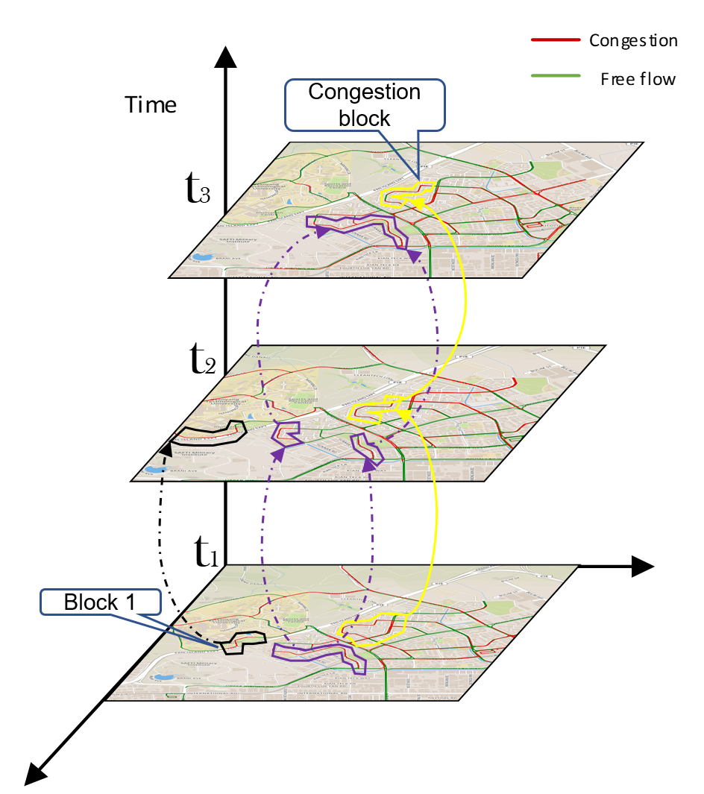 | 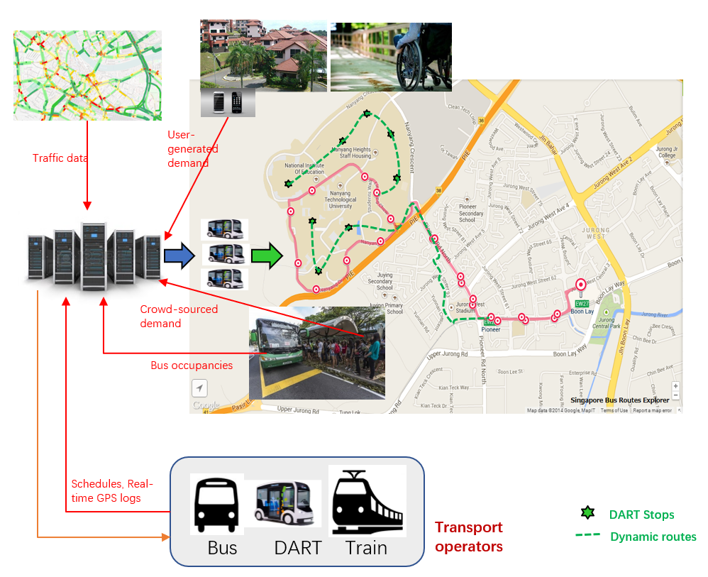 | 交通拥堵传播行为的建模及预测问题 |
最后一公里交通优化问题 |
| 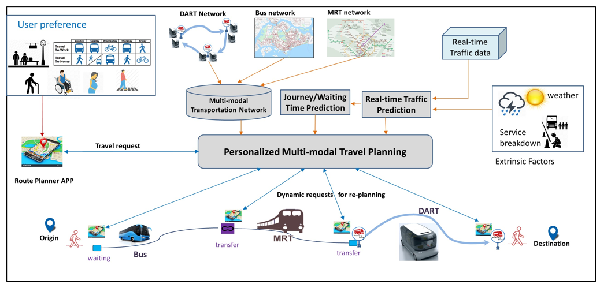; | |
| 多模态交通网络上个性化出行方案规划问题 |
|
海洋船舶轨迹数据分析： 包括船舶轨迹数据增强、轨迹预测、基于船舶轨迹数据的捕鱼行为分析等问题。
| 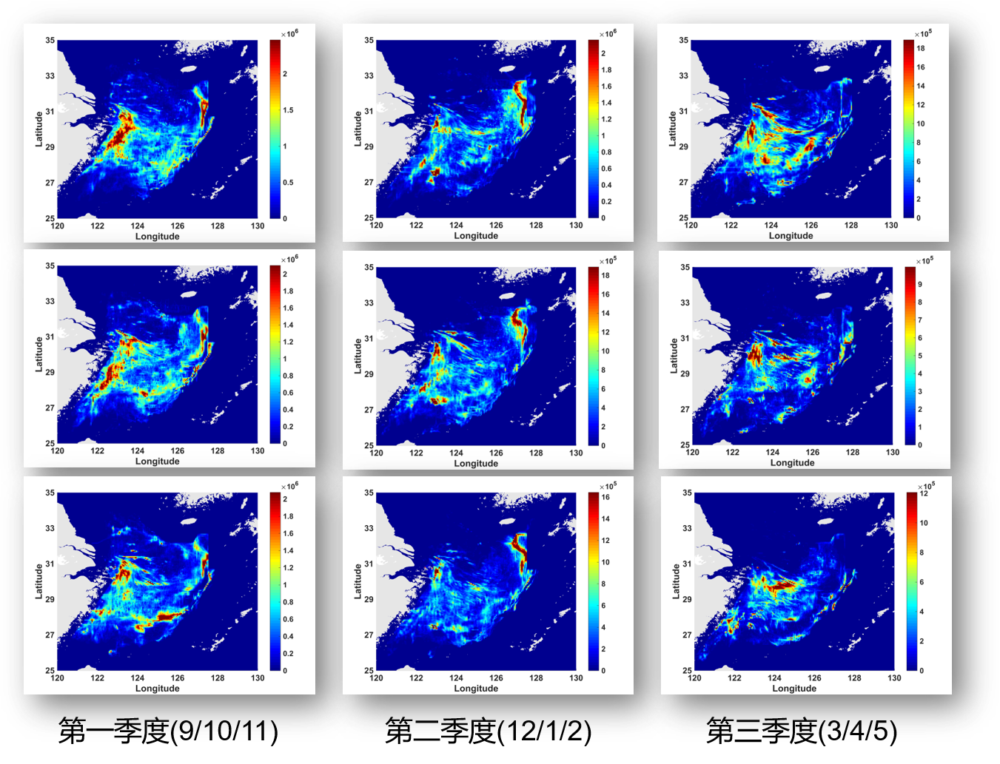; | |
| 基于船舶轨迹数据的捕鱼行为分析 |
|
1) 基于深度学习的代码表征问题 利用深度学习来检测软件代码的安全问题是近年来研究和实践的热点之一。随着软件复杂度的提高和安全威胁的日益增加，传统的基于规则的安全漏洞检测方法越来越难以应对新的挑战。深度学习以其强大的特征提取能力，在理解复杂代码结构和模式方面显示出巨大潜力，为软件安全检测提供了新的解决方案。
2) 软件漏洞检测及其风险评估问题 基于CVE/CWE等安全漏洞数据库，检测开源软件中是否存在相同或类似的软件漏洞；对软件代码中存在的安全漏洞进行风险评估，并研究软件漏洞的修复策略
3) C/C++生态中第三方库依赖关系分析
| 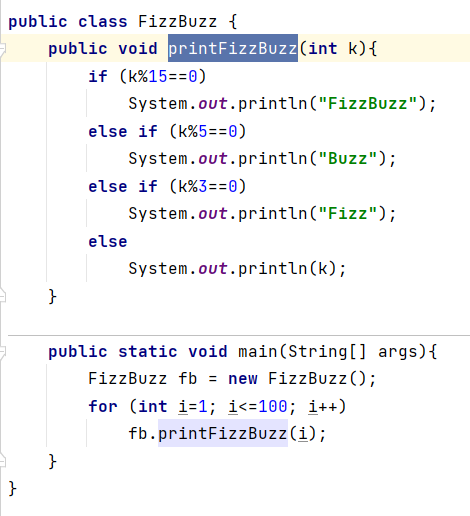 | 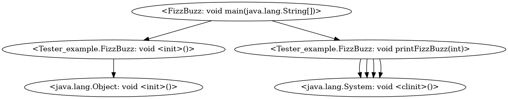 | （a） |
（b） |
| 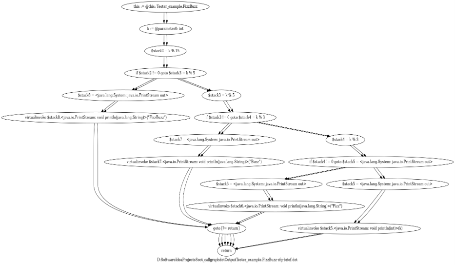; | |
| （c） |
|
| 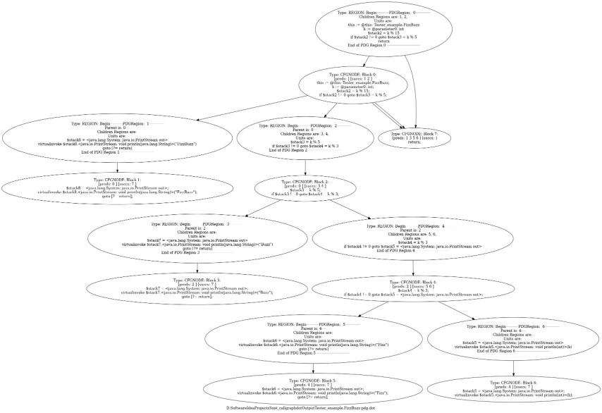; | |
| （d） |
|
| 多视角软件代码分析 |
|
| 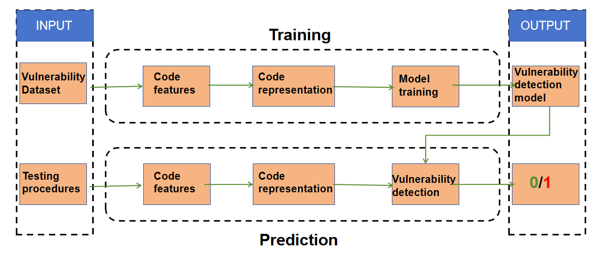 | |
| 软件漏洞检测流程 |
|
| 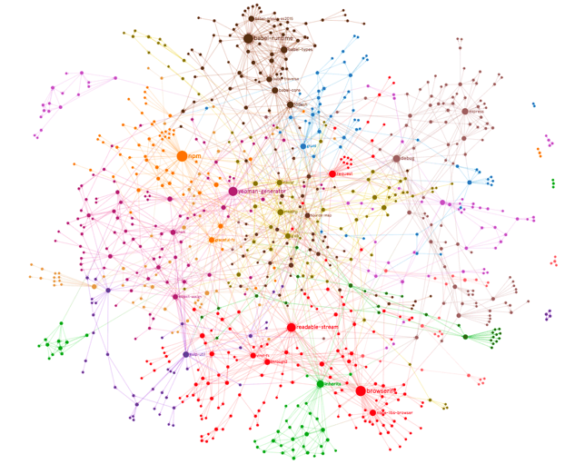; | |
| 构建 C/C++ 生态中第三方依赖关系图 |
|
(1) 图攻击
图对抗攻击是指攻击者通过对输入的图进行微小的修改，以使得机器学习模型做出错误的判断。这些修改可能对人类来说几乎不可察觉，但却足以欺骗计算机系统（例如推荐系统，社交网络等）。
| 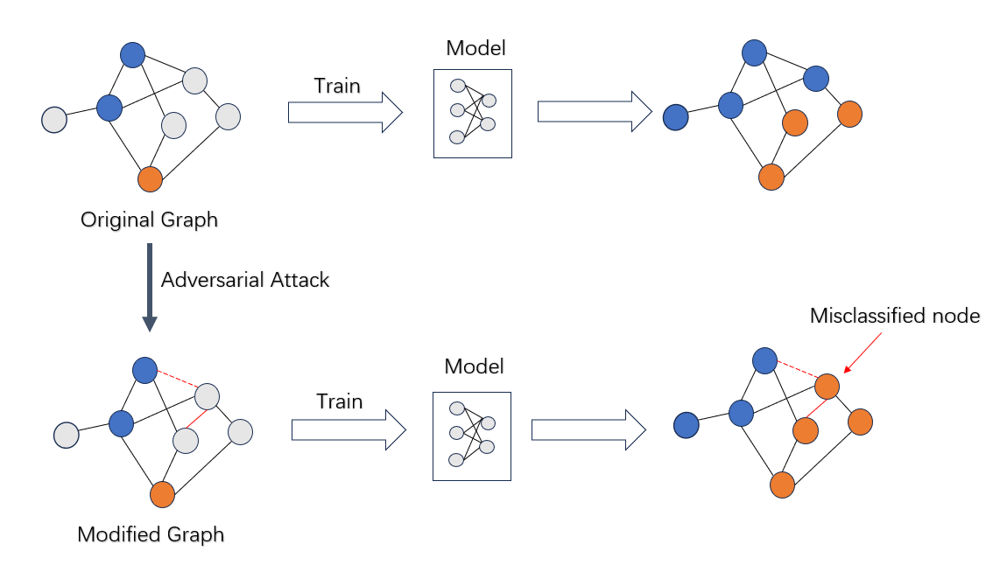; | |
| Adversarial Attack on Graph |
|
(1) 强化学习
强化学习作为一种模仿人类学习行为的机器学习方法，对于实现智能决策和自主学习具有重要意义。课题组研究如何在复杂环境中实现智能体的高效决策、如何平衡探索与利用的关系、如何处理延迟奖励等挑战。还涉及如何将深度学习与强化学习相结合，以解决高维状态空间下的决策问题，以及如何应对现实环境中的不确定性和噪声。
| 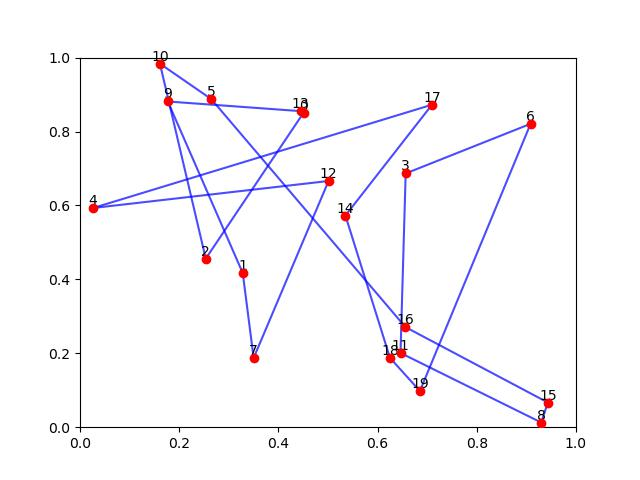 | 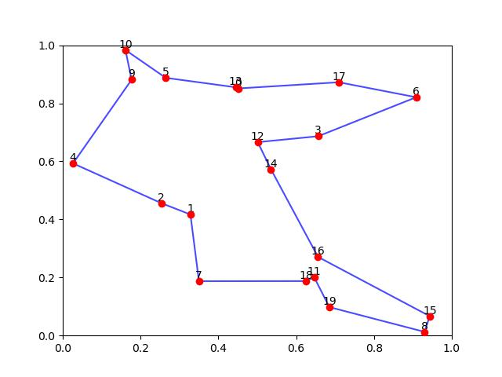 | （a）未经训练的2-opt算法得到的路径 |
（b）训练之后的2-opt算法得到的路径 |
| 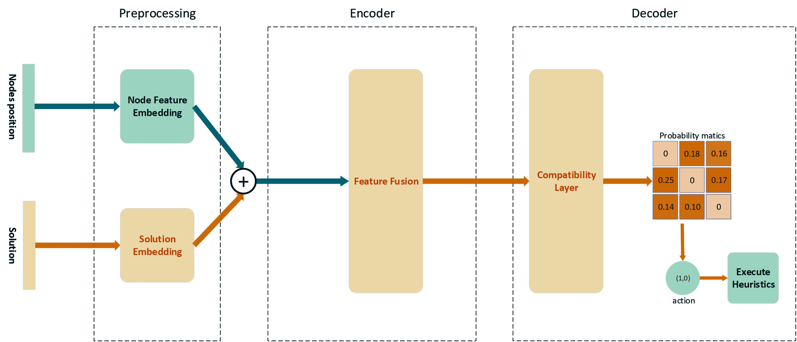 | |
| Improvement Heuristic基本流程 |
|